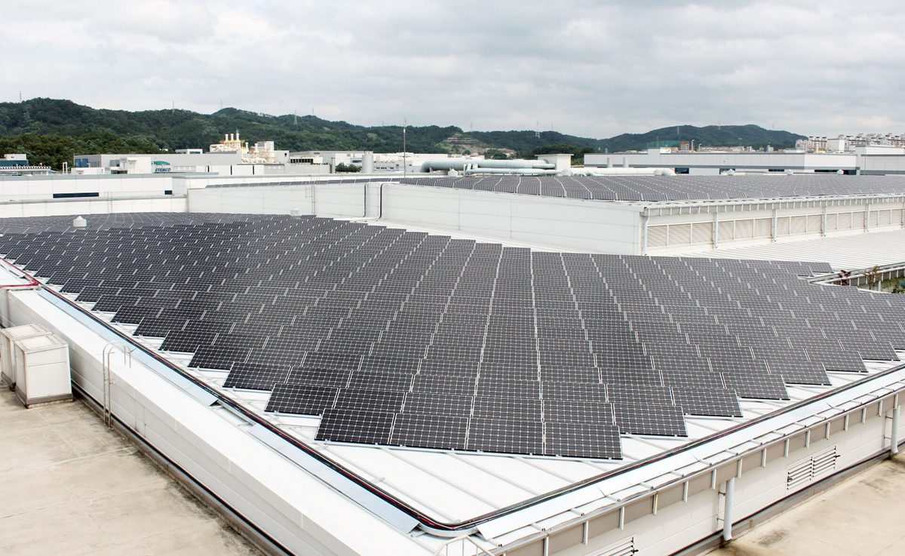

서부발전, 대전 산업단지 공장 지붕에 태양광 13MW 이상…20년 운영하며 수익 일부 지역 환원

산단 에너지자급자족 사업 협약, 입주기업 20곳 이상 고효율 설비 교체 지원…군산 산단 11.69MW에 이어 두 번째
한국서부발전이 10월 20일 대전시, 한국산업단지공단 충청지역본부, 한국에너지기술연구원, 시공기업 등과 '대전 산업단지 에너지자급자족 인프라 구축·운영사업' 착수보고회와 업무협약식을 열었다. 서부발전은 산업단지 공장 지붕 등에 13MW 이상의 태양광을 설치하고, 20곳 이상의 입주기업이 노후 설비를 고효율 기기로 바꾸도록 지원하며, 에너지 생산·사용량을 한눈에 보는 통합 관리 플랫폼도 구축한다. 서부발전은 특수목적법인 설립을 주도해 준공 뒤 약 20년간 설비를 운영하고, 발전 수익 일부는 지역사회에 환원하며 입주기업 전기요금 절감 사업에 재투자할 계획이다. 이 사업으로 2029년까지 누적 약 5,723t의 온실가스를 줄일 것으로 예상되며, 서부발전은 2023년부터 군산 산업단지에서도 11.69MW 규모의 지붕 태양광을 설치해 같은 사업을 해 왔다.
시민에너지 관점
이미 지어진 공장 지붕을 활용해 새 부지 갈등 없이 재생에너지를 늘리고 그 전기를 입주기업이 쓰는 방식은 분산에너지의 좋은 예로 보인다. 다만 '수익 일부 지역 환원'이 어느 정도 규모로, 어떤 방식으로 누구에게 돌아가는지는 아직 구체적으로 알려지지 않았다. 공기업이 주도하는 SPC에 지역 주민이나 입주기업 노동자, 지역 협동조합이 지분으로 참여할 길이 열린다면 환원을 넘어 지역이 함께 소유하는 산단 에너지 모델로 나아갈 수 있을 것이다.
서부발전과 대전시는 발전 수익 일부를 지역사회에 환원한다는 계획의 규모와 방식, 받는 대상을 사업 초기에 구체적으로 공개해야 한다. 특수목적법인을 세울 때 지역 주민과 입주기업 노동자, 지역 협동조합이 지분으로 참여할 수 있는 몫을 따로 두는 방안을 검토할 수 있다. 통합 관리 플랫폼으로 확인한 에너지 생산·사용 실적과 전기요금 절감 효과는 공개해 다른 산업단지가 참고하게 할 수 있다. 2023년부터 같은 사업을 해 온 군산 산업단지의 환원 실적도 함께 공개되면 대전 사업의 기준을 세우는 데 도움이 될 것이다.
출처: 전기신문 2026-10-20 정세영 원문 보기
西部発電、大田の産業団地の工場屋根に太陽光13MW以上…20年運営し収益の一部を地域に還元
産業団地エネルギー自給自足事業で協約、入居企業20社以上の高効率設備への更新を支援…群山産業団地11.69MWに続き2カ所目
韓国西部発電が10月20日、大田市、韓国産業団地公団忠清地域本部、韓国エネルギー技術研究院、施工企業などと「大田産業団地エネルギー自給自足インフラ構築・運営事業」の着手報告会と業務協約式を開いた。西部発電は産業団地の工場屋根などに13MW以上の太陽光を設置し、20社以上の入居企業が老朽設備を高効率機器に替えるのを支援するほか、エネルギーの生産量と使用量をひと目で確認できる統合管理プラットフォームも構築する。西部発電は特別目的会社（SPC）の設立を主導し、竣工後約20年間設備を運営するとともに、発電収益の一部を地域社会に還元し、入居企業の電気料金削減事業に再投資する計画だ。この事業で2029年までに累計約5,723トンの温室効果ガスを削減できる見通しで、西部発電は2023年から群山産業団地でも11.69MW規模の屋根置き太陽光を設置して同様の事業を進めてきた。
市民エネルギーの視点
すでにある工場の屋根を活用し、新たな用地をめぐる対立なしに再生可能エネルギーを増やし、その電気を入居企業が使うという方式は、分散型エネルギーのよい例とみられる。ただ、「収益の一部を地域に還元」がどの程度の規模で、どのような方法で誰に届くのかは、まだ具体的に明らかになっていない。公企業が主導するSPCに、地域住民や入居企業の労働者、地域の協同組合が出資して参加する道が開かれれば、還元を超えて地域が共に所有する産業団地エネルギーのモデルへと進めるだろう。
西部発電と大田市は、発電収益の一部を地域社会に還元するという計画の規模や方法、受け取る対象を、事業の初期に具体的に公開すべきだ。特別目的法人を設立する際に、地域住民や入居企業の労働者、地域の協同組合が持ち分として参加できる枠を別に設ける案を検討できる。統合管理プラットフォームで確かめたエネルギーの生産・使用の実績や電気料金の節減効果は公開し、他の産業団地が参考にできるようにできる。2023年から同じ事業を進めてきた群山産業団地の還元実績もあわせて公開されれば、大田の事業の基準づくりに役立つだろう。
出典: 전기신문 2026-10-20 정세영 原文を読む
西部发电在大田产业园区工厂屋顶建设13MW以上太阳能，运营20年并将部分收益回馈地方
签署产业园区能源自给自足项目协议，支持20多家入驻企业更换高效设备；继群山产业园区11.69MW之后的第二个项目
韩国西部发电于10月20日与大田市、韩国产业园区公团忠清地区本部、韩国能源技术研究院及施工企业等举行了"大田产业园区能源自给自足基础设施建设与运营项目"启动汇报会和业务协议签署仪式。西部发电将在园区工厂屋顶等处安装13MW以上的太阳能设施，支持20多家入驻企业将老旧设备更换为高效设备，并建设可一目了然查看能源生产和使用情况的综合管理平台。西部发电将牵头设立特殊目的公司（SPC），在竣工后约20年内运营设施，并计划将部分发电收益回馈地方社会，再投资于降低入驻企业电费的项目。预计到2029年该项目可累计减少约5,723吨温室气体；西部发电自2023年起也在群山产业园区安装了11.69MW规模的屋顶太阳能，推进同类项目。
市民能源视角
利用现有工厂屋顶，在不引发新用地矛盾的情况下扩大可再生能源，并由入驻企业使用所发电力，这种方式似乎是分布式能源的良好范例。不过，"部分收益回馈地方"的规模、方式以及受益对象，目前尚未具体公开。如果由国有企业主导的SPC能为当地居民、入驻企业职工和地方合作社打开入股参与的渠道，就有可能超越"回馈"，迈向由地方共同拥有的园区能源模式。
西部发电和大田市应在项目初期具体公开把部分发电收益回馈地方社会这一计划的规模、方式和受益对象。设立特殊目的法人时，可以研究为当地居民、入驻企业职工和地方合作社单独预留入股参与的份额。通过综合管理平台确认的能源生产和使用实绩以及电费节省效果，可以公开供其他产业园区参考。如果从2023年起开展同类项目的群山产业园区的回馈实绩也一并公开，将有助于为大田项目确立标准。
来源: 전기신문 2026-10-20 정세영 查看原文
Korea Western Power to put 13MW-plus of solar on Daejeon industrial park roofs, returning part of 20 years of revenue locally
Industrial park energy self-sufficiency agreement also supports efficiency upgrades at 20-plus tenant firms; second such project after 11.69MW at Gunsan
Korea Western Power held a kickoff briefing and signed an agreement on October 20 with the city of Daejeon, the Korea Industrial Complex Corporation's Chungcheong headquarters, the Korea Institute of Energy Research and contractors for an energy self-sufficiency infrastructure project at a Daejeon industrial park. The company will install more than 13MW of solar on factory roofs and other spaces in the park, help more than 20 tenant companies replace aging equipment with high-efficiency units, and build an integrated platform that shows energy production and use at a glance. Western Power will lead the creation of a special purpose company and operate the facilities for about 20 years after completion, returning part of the generation revenue to the local community and reinvesting it in cutting tenants' electricity bills. The project is expected to cut a cumulative 5,723 tonnes of greenhouse gases by 2029, and the company has run a similar scheme at the Gunsan industrial park since 2023, installing 11.69MW of rooftop solar.
Citizen Energy View
Using existing factory roofs to add renewables without new land disputes, with tenant firms consuming the power, appears to be a good example of distributed energy. However, how large the "share of revenue returned to the community" will be, how it will be delivered and to whom has not yet been spelled out. If the SPC led by the state-owned utility opened the door for local residents, tenant-company workers and local cooperatives to take equity stakes, the scheme could move beyond giving back toward an industrial park energy model the community co-owns.
Korea Western Power and Daejeon City should spell out early in the project how large the share of revenue returned to the community will be, how it will be returned and who will receive it. When the special purpose company is set up, a separate equity share could be reserved for local residents, workers at tenant companies and local cooperatives. Energy production and use figures and power bill savings confirmed through the integrated management platform could be published for other industrial parks to learn from. Publishing the community returns from the Gunsan industrial park, where the same model has run since 2023, would also help set a benchmark for Daejeon.
Source: 전기신문 2026-10-20 정세영 Read the original